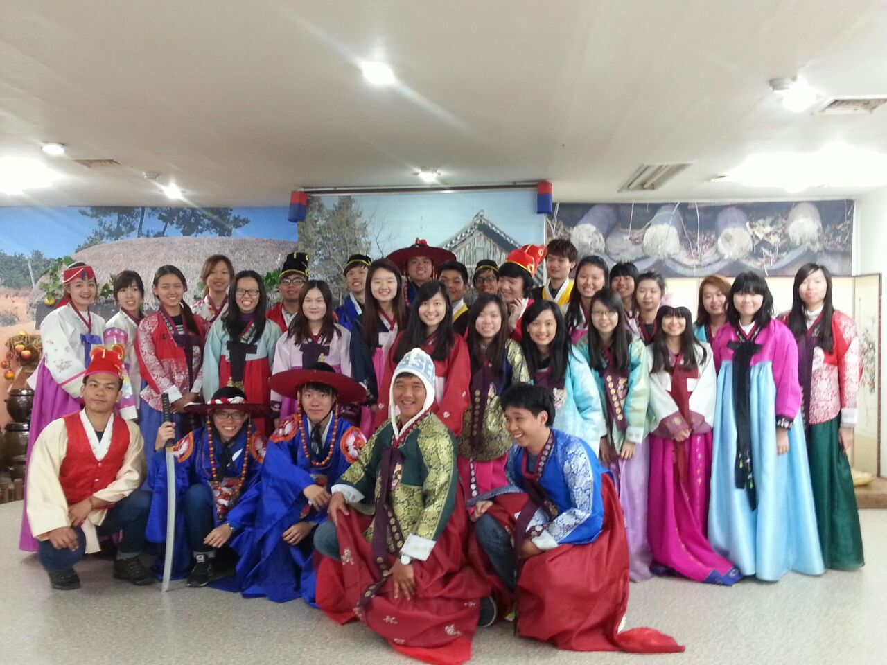
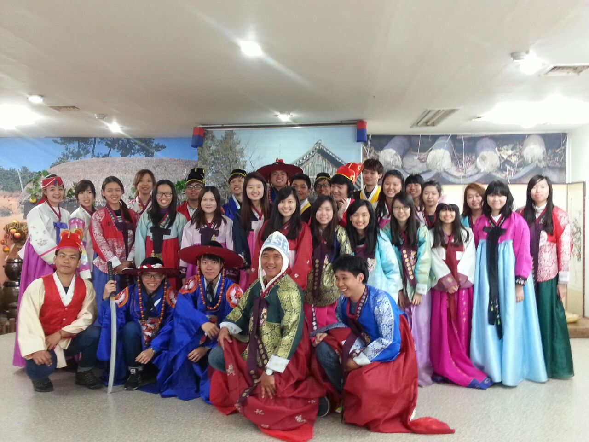

|
Being the pioneer batch, student are benefitting in certain ways, such as more opportunity to participate for event because you
dont have to fight the slot with others. More opportunity to participate in competitions and introduce new stuff ..High care system
|
SIT has specialized degree on purely Software Engineering
|
SIT Integrated Work Study Programme to help student to develop industry-ready graduates. SIT new allow model allow student to deepen our specialist skills and integrate theory and practice in the workforce.
|


 

 <
/p>
<
/p>